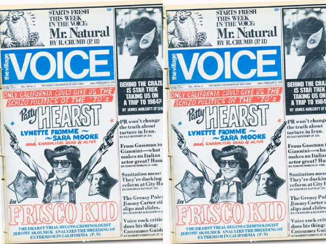
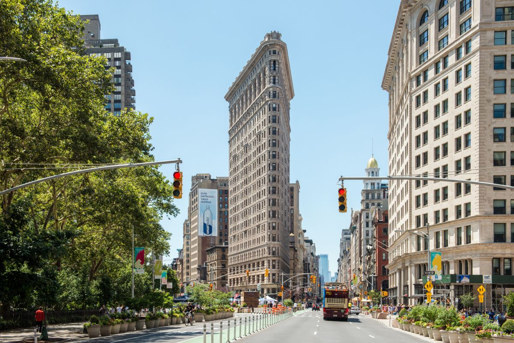

The who, what, when, where, and why of how this essay came to be.
For their first project of the year in AP English Language & Composition, juniors at New York City's NEST+m high school were tasked with writing a feauture journalism article. But wait: what is a feature journalism article? This is a question that students explored in detail, through the analysis of articles in The Village Voice, a former news publication based in New York City.
As the students discovered when creating their own definitions, there are many ways to describe feauture journalism. Dictionary.com defines a feature journalism article, also called a feature story, as a newspaper or magazine article or report of a person, event, an aspect of a major event, or the like, often having a personal slant and written in an individual style.
After analyzing multiple exemplars, students started to compose their own pieces. Students needed to develop a "Central Idea" of their piece by expressing multiple claims throughout the article, as well as include Methods of Development. A peer editing process also took place, so students could get a diffrent perspective on their writing and gain inspiration from others' work.
Although students were limited to writing about a landmark in New York City, the final products were nothing short of a diverse array of personal testimonials. The papers not only conveyed the significance of the chosen landmarks to the authors, but explained why/how they represented their New York. Each student's article was combined into a single website, available for view here.